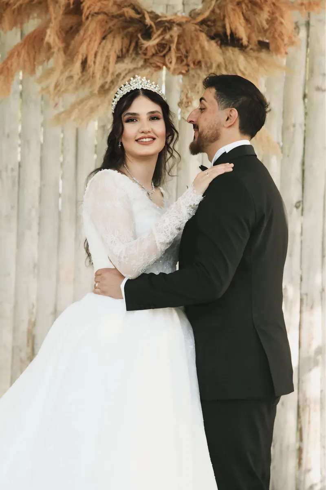

Görüşme
WhatsApp'tan ya da yüz yüze tanışırız. Tarihi, mekânı ve neyi istediğinizi konuşuruz; sorularınızı o zaman yanıtlarız.
Yasin & Merve Aysan Fotoğrafçılık ile tarihinizi ve çekim türünüzü konuşun; günü birlikte planlayalım. Çalışmaları görmek için Instagram'a bakabilirsiniz.
 Temsilî stok fotoğraf, işletmenin çalışması değildir
Temsilî stok fotoğraf, işletmenin çalışması değildir
Tarih seçmek, çekim günü ve fotoğrafların size ulaşması. Her adımı sizinle konuşarak ilerleriz.
WhatsApp'tan ya da yüz yüze tanışırız. Tarihi, mekânı ve neyi istediğinizi konuşuruz; sorularınızı o zaman yanıtlarız.

Düğün, nişan ya da dış çekim günü. Sizi kasmayan, doğal anları yakalamayı hedefleyen bir akış.

Seçilen kareler düzenlenip size ulaştırılır. Teslim biçimi ve süresi görüşmede birlikte netleşir.
Paket içerikleri ve fiyatlar bu sayfada yok. Çekim türünüzü seçip yazın, kapsamı birlikte belirleyelim.
Hazırlıktan geceye bir günün anlatılması.
Yüzük ve ilk heyecanı kaydeden daha küçük bir gün.
Düğün öncesi ya da sonrası, sadece ikiniz için.
Rezervasyon talebi WhatsApp'tan alınıyor. Müsait olup olmadığınızı sormak için yazmanız yeterli; yanıtı işletme verir. Çalışmaların tamamı Instagram sayfasında.

Temsilî stok fotoğraf